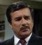
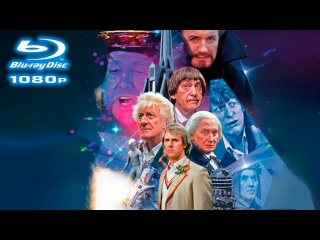
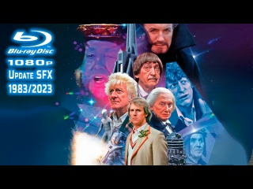
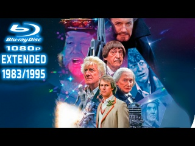
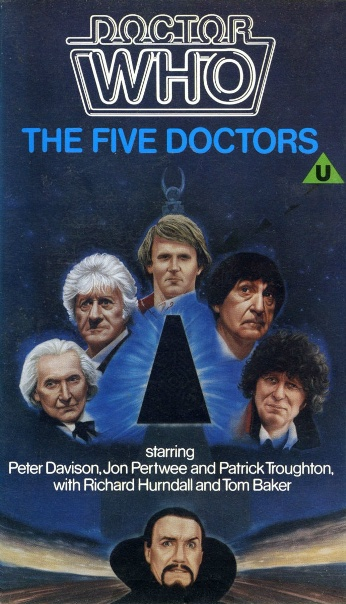
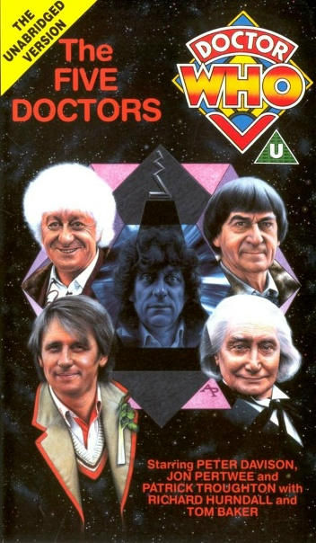
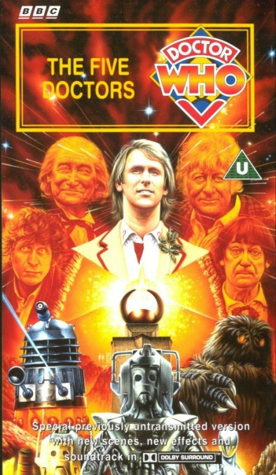
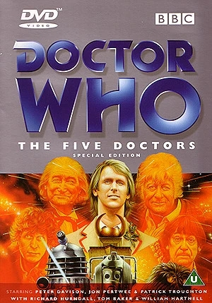
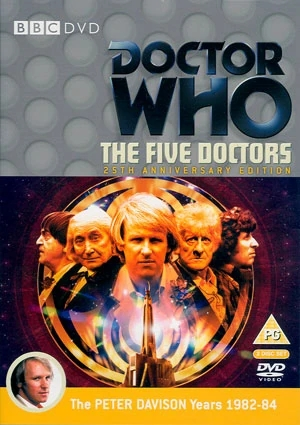
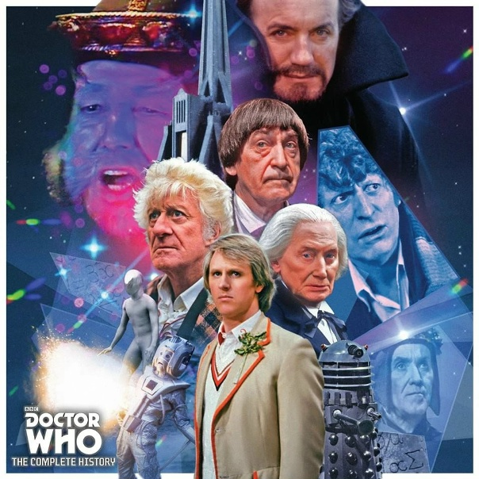

помощник

помощник
помощник

помощник
Субтитры: Русские и Английские |  |
|---|---|
с улучшенными спецэффектами и звуковым сопровождением Субтитры: Русские и Английские |  |
Субтитры: Русские и Английские |  |
The Five Doctors
спецвыпуск в честь 20-летнего юбилея сериала
Дата выхода: 23 ноября 1983
Формат: 90-минутный эпизод
|  помощник | |
помощник | помощник | помощник |
Юбилейный спецвыпуск к 20-летию сериала. Кто-то вытаскивает из временного потока прошлые инкарнации Доктора и забрасывает их в Зону Смерти на Галлифрее — арену, где Повелители Времени когда-то стравливали пленённых существ. Первый, Второй и Третий Доктора, а также Сьюзен, Сара Джейн и Бригадир оказываются заперты внутри. Пятый Доктор должен разгадать заговор — и за всем стоит Боруса, который ищет бессмертие у Гробницы Рассилона.
Уильям Хартнелл к тому времени умер, и Первого Доктора сыграл Ричард Хёрндолл. Том Бейкер отказался участвовать — поэтому Четвёртый Доктор появляется лишь в вырезанных сценах из несостоявшейся «Шады». А Патрик Траутон снова вернулся как Второй Доктор — и это была одна из его последних ролей перед смертью в 1987 году.
  VHS - 1985 / 1990 |   VHS+Boxset - ноябрь 1995 |
|---|---|
  DVD - 1 ноября 1999 + 2008 |  Blu-ray - 18 сентября 2023 * Версия в нашей группе |
